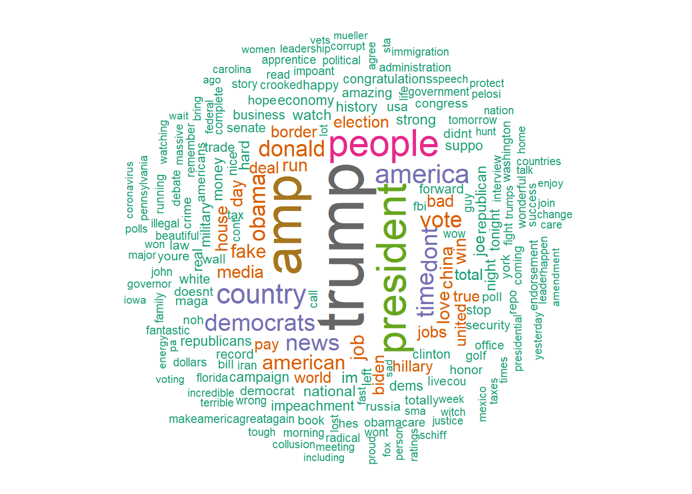
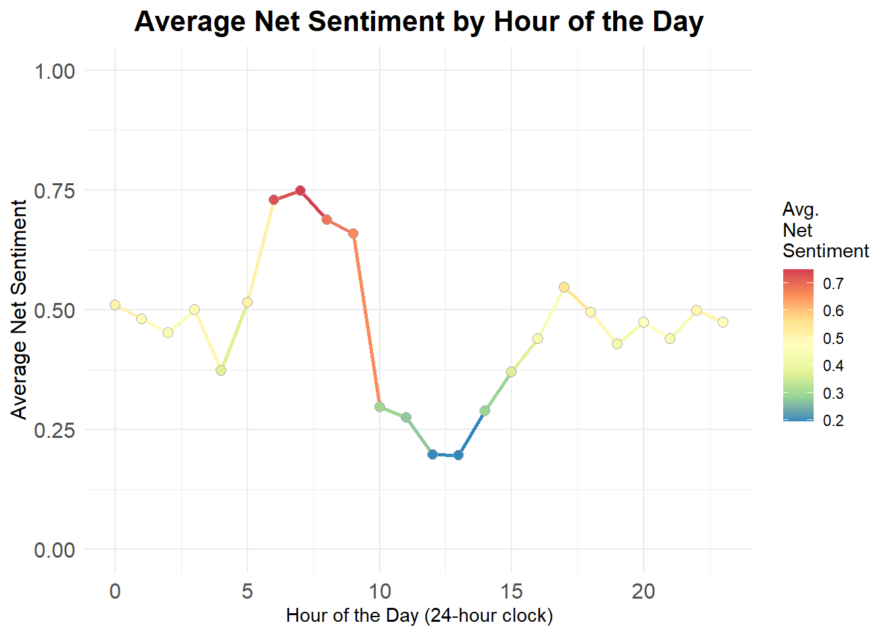
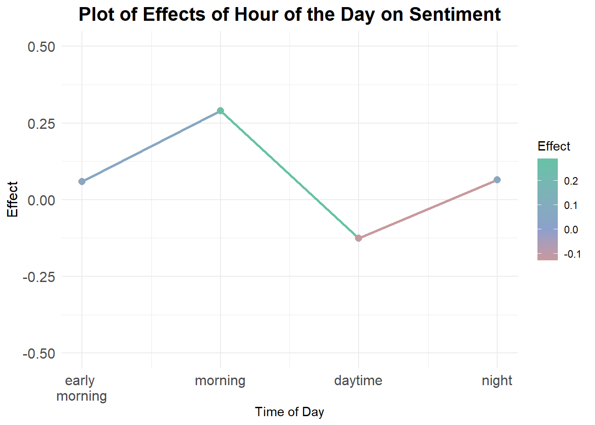
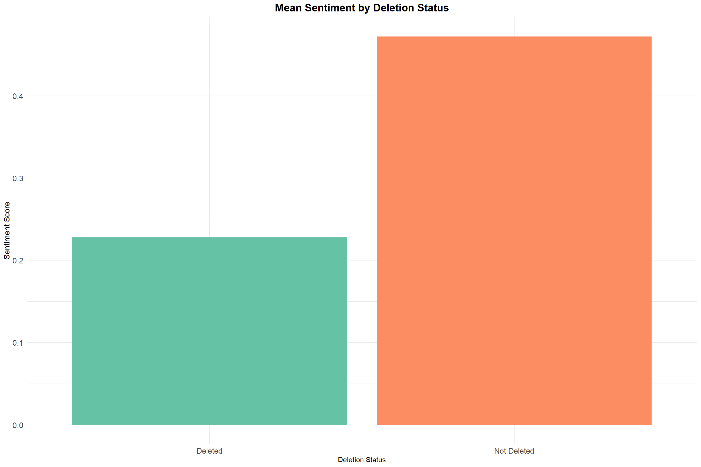
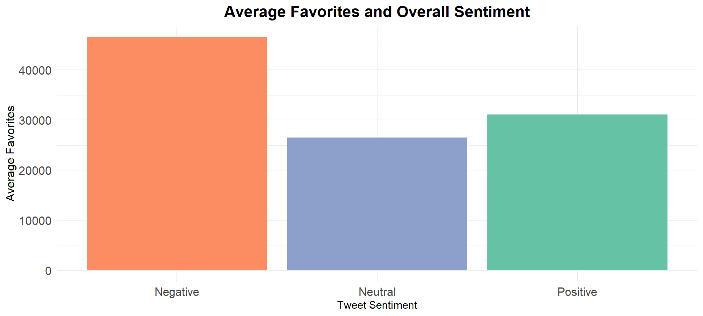
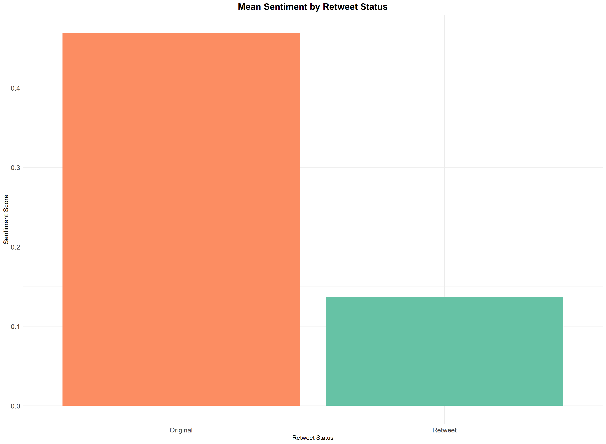

Our sentiment analysis was conducted to investigate and understand how the features and circumstances of each of Trump’s tweets impacted the resulting tweet’s sentiment value. Our analysis also aimed to explore whether there was a relationship between the tweet’s sentiment value and the actions taken against the tweet. To this end, our analysis was guided by the following research questions:
Donald Trump, the 45th president of the US, is a divisive and controversial political figure. He is well known for his prolific use of Twitter, using the platform to send over 57,000 tweets since his account was created in May 2009. Many tweets carry the sentiments of their senders. Sentiments are important to understand and analyze, as sentiment information can be used to improve products and services as well as inform decision related to marketing and reputation.
Trump’s extensive tweet history provides a plethora of raw text data to perform analysis on. We hypothesized that:
Using the bag-of-words model, we performed sentiment analysis using the provided Trump Tweets dataset to test our hypotheses.

Figure 1: Word Cloud.

To regroup our hour variable to better suit an ANOVA, we will base these new
groups on our observations of the averages above:
Using ANOVA to test if there are any statistically significant differences in sentiment scores across these time categories (hours) of the day.
Yes, time of day does indeed affect the resulting sentiment of the tweet. Overall, tweets sent out during the morning have a higher average sentiment and tweets sent out during the daytime have a lower average sentiment.
Tweets that contained comparatively more negative sentiment value tended to be deleted at higher rates.
There was a significant difference in sentiment values between Trump’s tweets and Trump’s retweets. Specifically, Trump’s tweets tended to have higher sentiment values compared to his retweets.
| Early.Morning | Morning | Day.Time | Night |
|---|---|---|---|
| 12917 | 1979 | 20523 | 19483 |
As one can see from the table, Trump tends to (re)tweet most often during Day Time hours and least often during Morning hours.
| Source.of.Variation | Df | Sum.of.Squares | Mean.Square | F.value | P.Value |
|---|---|---|---|---|---|
| Time of Day | 3 | 618 | 206.12 | 81.34 | 0 |
| Error | 54898 | 139117 | 2.53 | NA | NA |
From the summary of the model, we can see that there is a significant difference in average sentiment scores across different times of day.

From the plot, we can see that the tweets (including retweets) have a more negative effect on net sentiment score in the daytime, while tweets during the morning have a more positive effect on average net sentiment.
As an aside, we can see that the above plot mimics the overall trend of the graph plotting average net sentiment by hour.
After performing logistic regression, we found that sentiment is a significant predictor of whether a tweet was deleted.
| Predictors | Estimate | Std..Error | Z.value | P.Value |
|---|---|---|---|---|
| Intercept | -4.227 | 0.0404 | -104.544 | 0.00000 |
| Net Sentiment | -0.088 | 0.0238 | -3.701 | 0.00021 |
Furthermore, a 2 - sample t-test comparing the mean sentiments of deleted and non-deleted tweets indicated that the mean sentiment of deleted tweets is significantly lower than the mean sentiment of non-deleted tweets.

text into net_sentiment, a categorical variable denoting whether tweet had overall positive, negative, or neutral sentiment.net_sentiment value and create visualizations based on strata.Side note: Any publicity is good publicity (even bad publicity). 
After comparing the sentiments of Trump’s own tweets and the sentiments of his retweets via a 2 - sample t-test, we found that there is a significant difference in the average sentiments between Trump’s tweets and his retweets.
| T_stat | P.value | X95..CI.Lower.Bound | X95..CI.Upper.Bound |
|---|---|---|---|
| -22.069 | 0 | -0.3608302 | -0.3019632 |
In particular, the mean sentiment of Trumps’s tweets seems to be higher than that of his retweets.
